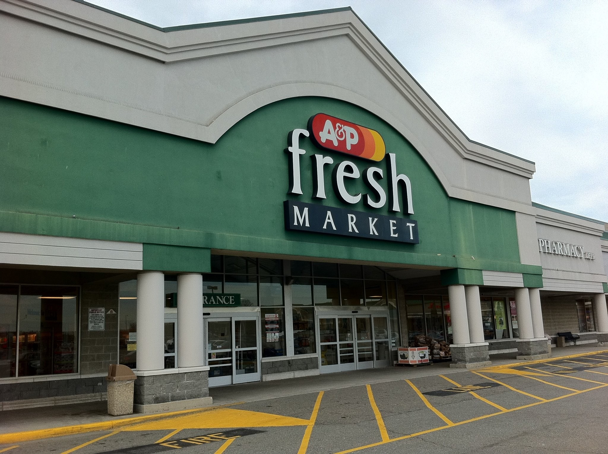
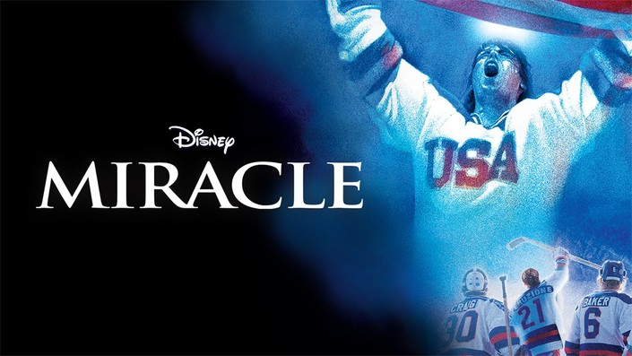
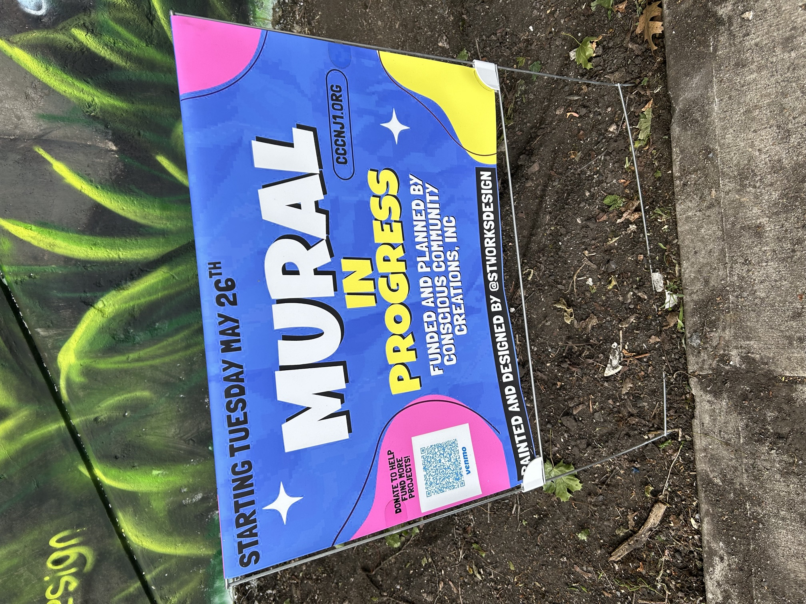
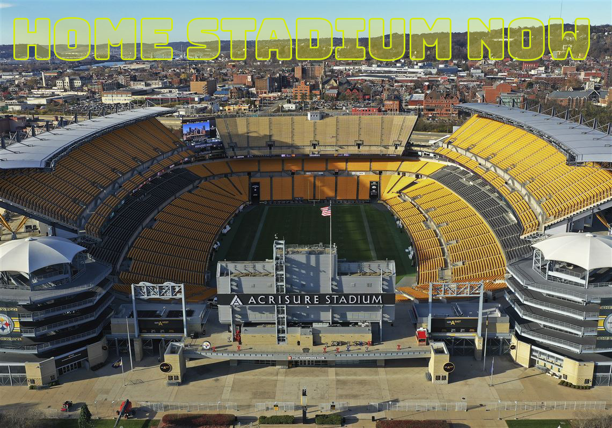
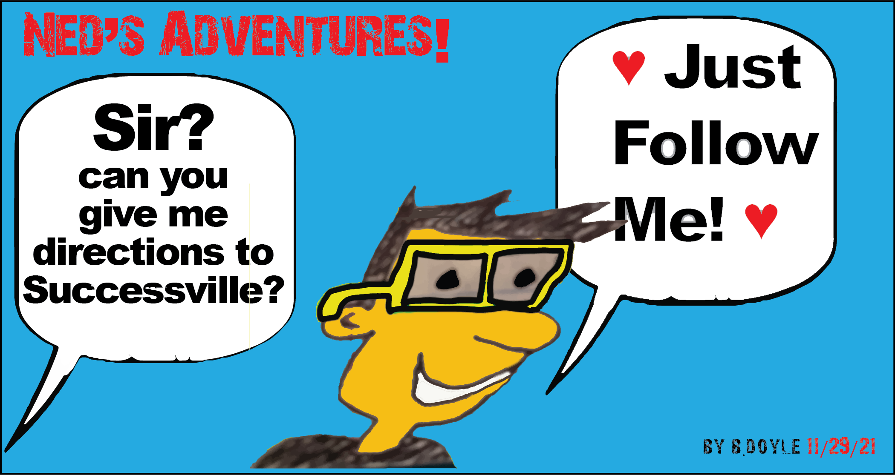

Get the 4-1-1 or information about me in general terms and what I hope to accomplish here with this website.
Think of this as a Launch Pad to the ⭐️ ⭐️ ⭐️'s... ...To send you off to view my ten websites!

My Digital Resume
Ok folks, here it is. My 25 year old professional life in website form. I am very proud of my career and how it happened. I remember the good stuff, and there was a lot of good. I want to continue and I shall. Thanks for checking this out. I know you are busy.
My 5 Favorite Books
I do love autobiographies. I always have! It's fun to visit a persons life and gain inspiration and knowledge and see how they tick or operate. These five books I have read a bunch and I would love to recommend them to you for your next great read!

My Favorite Things (v1)
My list of Favorite Things is here. It does have a lot of sentimental value to picking things that live in your mind and heart. Maybe you will agree? Maybe you will not? However, you will know what my favorites are. It's a pleasure to show you.
More Favorite Things (v2)
Get ready everyone! I am back to add more Favorite Things to this wonderful list of mine of favorites. Maybe you will agree with them? Maybe not, but the fun of it is to tap into favorite things like this. Who/what are your favorites?
The Washington Theatres
Hmmm? One Hundred Years ago from now! That will be the year 1926. Wow, this is when this historal landmark opened and today, on the same patch of earth, it's still there, or at least the great memory of it is. I will try to explain its history with the internets help, thanks to some pictures and copy from it. I love stuff like this!
Fiddler on the Roof -The Plan
Tradition for the Papa is extremely important within this community as he has many goals to follow through with to ensure happiness or balance in the eyes of God. As "master of the house", one responsibility is to see that his first three daughters are married off when age appropriate. Will it work for him?
Chicago Concert
On August 5, 2025, my sister and I went to see Chicago in concert in an outdoor venue in nearby Pennsylvania. It was a great experience as they put on a fantastic show. You can still see them on tour today as shown in the footer of this website. This site shows two concert videos also! From 1967 to today and beyond!

The Beautiful Mural 07882
This beautiful mural highlighting the cool town of Washington, NJ (07882) started in late May 2026 and ended in early June 2026. It took a week to make from start to finish. What a talented painter. This mural was created by Conscious Community Creations, Inc., and as an artist myself, I wanted to make note to all here by celebrating its beauty!
QB - Joe Namath
Pertaining to American Football, without what happened in Super Bowl III, would there be an NFL today as we know it? The New York Jets as heavy underdogs defeated the powerful Baltimore Colts which changed history. Nobody knew it, except for QB Joe Namath beforehand as he famously perdicted his teams success in the game with victory! I guarantee it!, he said. This site also showcases his brillant college career at Alabama.

The Steelers NFL Draft
The 2026 NFL American Football Draft was held in Pittsburgh, PA this year and around 800,000 fans showed up for it. Maybe these talented players will be the missing pieces soon to get a Super Bowl for the Steelers? As a fan, I sure hope so! Who did they pick? Where are they from? Are they busts or pro bowl players? Time will tell! It's time to play ball and win - win - win! Sundays are sure a lot of fun now to watch this great game.
Let's Chat!
MY NAME IS BILL DOYLE My email link is below...
Let's Chat!

Faith makes all things possible!
MY WEBSITES Done in Visual Studio Code and GitHub mostly along with other programs as well.